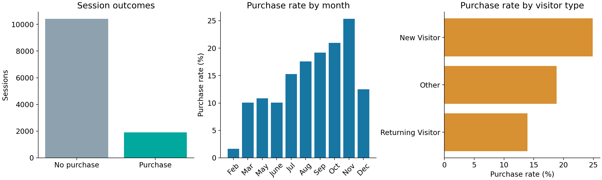
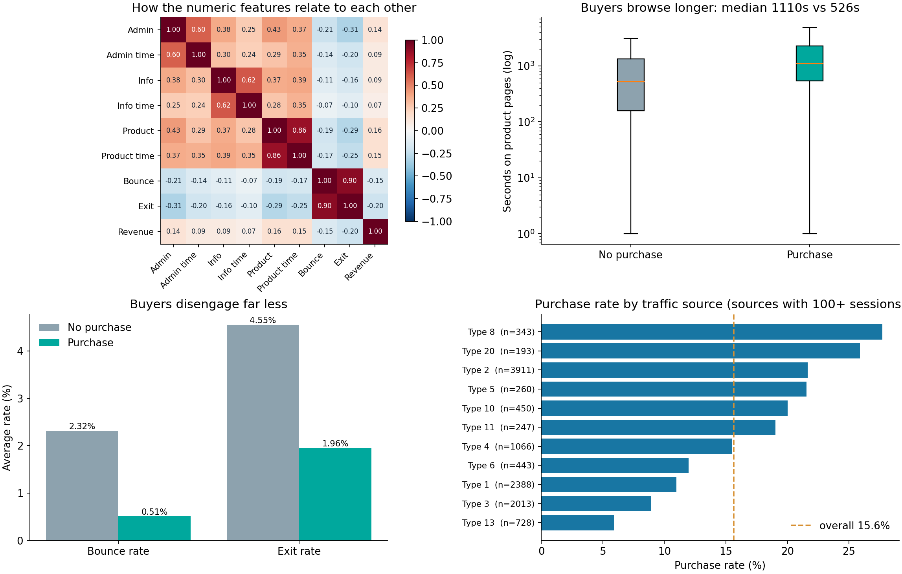
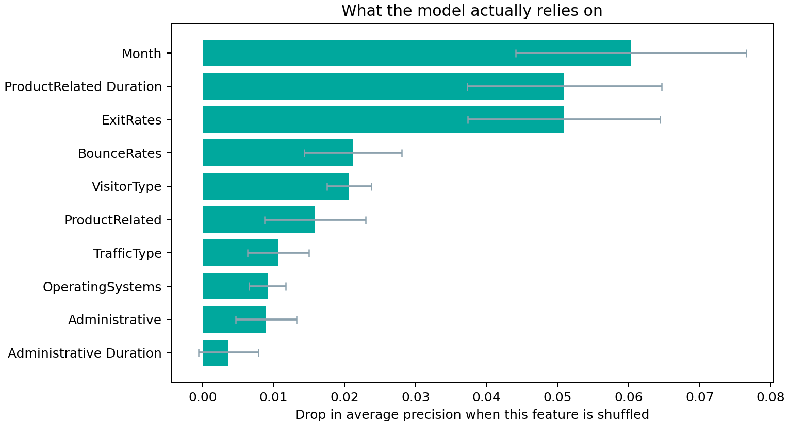

Can browsing behavior tell us which shopping sessions will end in a purchase?
Abandonment has sat near 70% for two decades, so this is a structural gap, not a temporary dip. At a $6.42 trillion market scale, even small conversion gains are commercially significant.
No store can hand-review every lost session. Analyst attention is the scarce resource — and that is what we target.
User: an ecommerce conversion analyst.
Situation: thousands of sessions end without a purchase; only a handful can ever be investigated.
Question: which ones should the team examine first?
Objective: rank completed sessions by purchase probability, using browsing behavior alone.
Concentrate real buyers into the top-scored slice. Our primary metric is average precision, because only 15.5% of sessions convert — plain accuracy would reward always predicting “no purchase”.
Why a shopper left · guaranteed revenue recovery · real-time intervention mid-session.
Predict: Revenue = purchase or no purchase.
Inputs: page counts and time, analytics rates, visitor type, month, device and traffic categories.
4 / 17
New visitors purchased in 24.9% of sessions versus 13.9% for returning visitors. November reached 25.4%; February was 1.6%.

Buyers spend about twice as long on product pages (median 1,110s vs 526s) and disengage far less (exit rate 1.96% vs 4.55%). Exit rate is the numeric feature most related to buying (r = −0.20); bounce and exit move together (r = 0.90). Traffic source 8 converts at 27%, source 13 at 6%.
PageValues, a revenue-derived analytics featurePrimary measure: average precision (AP), because purchases are uncommon.
We measured what step 02 costs: keeping PageValues would lift AP from 0.374 to 0.723. It is computed from revenue, so we treat that as leakage, not an achievement.
Combines feature values into a linear score. Class weighting gives rare purchases more influence during training.
Averages predictions from many decision trees to capture nonlinear patterns and interactions.
Adds trees sequentially to improve earlier predictions. The main pipeline uses histogram gradient boosting.
Predicts no purchase for every session. Its high accuracy shows why purchase recall also matters.
setup — 80/20 split, four folds, fix_imbalance=Truecompare_models — PyCaret’s full classifier listtune_model → predict_model on its own holdoutSame cleaned data, same excluded PageValues.
| Model | AUC | Recall |
|---|---|---|
| LightGBM | 0.7732 | 14.9% |
| Gradient boosting | 0.7641 | 12.8% |
| Random forest | 0.7495 | 12.1% |
| Dummy baseline | 0.5000 | 0.0% |
Best PyCaret AUC 0.773 against our scikit-learn 0.787. Two toolchains, one conclusion: no model pulls clearly ahead.
The tuned forest leads by +0.0028 — 95% CI -0.008 to +0.014, winning only 68% of 2,000 bootstrap resamples. The interval crosses zero.
So we do not claim a winner. Every real model beats the baseline decisively; between themselves they are statistically indistinguishable.

| Feature | Impact |
|---|---|
| Month | −0.060 |
| ProductRelated Duration | −0.051 |
| ExitRates | −0.051 |
| BounceRates | −0.021 |
| VisitorType | −0.021 |
The top feature is Month — not a behaviour. The model has partly learned the seasonality of one store in one year.
That is a limitation we found by checking, and it is exactly why validation on a later time period is our first next step.
| Operating point | Precision | Recall | F1 |
|---|---|---|---|
| 0.500 — the default | 37.1% | 46.3% | 0.412 |
| 0.446 — best F1 | 34.5% | 62.3% | 0.444 |
| 0.607 — review top 10% | 43.7% | 28.0% | — |
Grid-searching hyperparameters moved AP by +0.002 — noise. Moving the decision threshold lifted recall from 46.3% to 62.3% and F1 from 0.412 to 0.444, for free.
Those 50 also contain 25 high-intent sessions that bought nothing. That list is the product.
Steps 1–3 run in the app today. Step 4 needs journey logs and an experiment.
artifacts/scored_sessions.csv: all 2,441 held-out sessions, scored once by the chosen model.Visitor #8 browsed 38 product pages over 64 minutes and never bounced — then left with nothing. That is the session an analyst should open first.
14 / 17| Student ID | Name | Main contribution |
|---|---|---|
| 6622782298 | Sirawich Narakulsookpipat | Problem research and framing |
| 6622780342 | Chaitawat Boonkitticharoen | Dataset audit and target definition |
| 6622782215 | Bhuchi Kumprakob | Exploratory data analysis |
| 6622780276 | Nonthaphat Chuathong | Evaluation design and model selection |
| 6622770657 | Kamin Sirisuwapong | PyCaret comparison and hyperparameter tuning |
| 6622772455 | Poonnawit Wongprateepwilai | Results analysis and business solution |
| 6622790267 | Choltawat Jullakasevi | Streamlit app, demonstration and limitations |
Every member presents their own section.
16 / 17The tuned forest improves AP from 0.156 to 0.374 on held-out sessions.